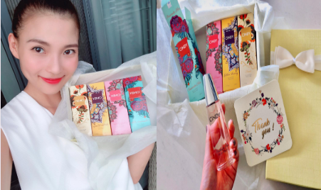

THÚY DIỄM
Diễn viên
Thúy Diễm là diễn viên phim truyền hình trẻ và tài năng. Cô được đánh giá cao về khả năng diễn xuất cũng như được đông đảo khán giả yêu thích qua rất nhiều bộ phim: “Ải mỹ nhân”, “Duyên nợ ba sinh”, “Chạm vào danh vọng” và góp mặt với vai trò khách mời trong bộ phim “Gạo nếp gạo tẻ” đang gây sốt màn ảnh.
Diễn viên Thúy Diễm thường sử dụng nước hoa Cindy trong những ngày quay dài và mùi hương mà chị thích nhất là Pinky Sweet.
“Đi quay cả ngày nhưng hương thơm cứ thoang thoảng bên mình cảm giác dễ chịu nên thấy vui vui… Diễm thấy CINDY không thua kém gì các thương hiệu nước hoa lớn nổi tiếng” - Chị chia sẻ.